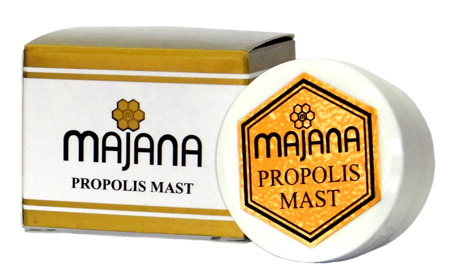

PROIZVODI
lista nasih proizvoda
PROIZVODI
(13)
-

Imunil
Imunil je idealna kombinacija brvelikog broja
vitamina, minerala, aminokiselina, ugljenih hidrata, enzima i drugih
supstanci iz pčelinjih proizvoda koje povoljno utiču na metaboličke
procese u organizmu. Koristi se za
revitalizaciju i jačanje
odbrambenih sposobnosti organizma.
Način upotrebe: 1-3 puta na dan, ½
sata pre jela, plastičnu (drvenu) kašičicu preparata lagano otopiti u ustima. Deci od 2
do 12 godina davati po pola kašičice 1-3 puta na dan. Imunil se
može uzimati i rastvoren u mlakoj vodi,
čaju, mleku. Sastav: cvetni
poliflorni med 89%, poliflorni polen 9%,
propolis 1,5%, mleč 0,5%.
Napomena: Osobe alergične na pčelinje proizvode ne smeju koristiti preparat.
-

Bronhil
Odlična kombinacija prirodnih sastojaka koja
zbog antibakterijskog, antivirusnog, antigljivičnog i antiinflamatornog
dejstva propolisa može delovati povoljno na zdravlje respiratornog sistema.
Način upotrebe: 3-4 puta na dan, ½ sata pre jela, plastičnu (drvenu)
kašičicu preparata lagano otopiti u ustima.
Deci od 2 do 12 godina davati po pola kašičice 3-4 puta na dan. Bronhil se može uzimati i rastvoren u
mlakoj vodi, čaju, mleku.
Sastav: cvetni poliflorni med 98%, propolis 2%, etarsko ulje nane.
Napomena: Osobe alergične na pčelinje proizvode ne smeju koristiti preparat. -

Hidratantna krema
Hidratantna krema namenjena je za negu
lica svih tipova kože. Aktivni prirodni sastojci
iz meda, pčelinjeg voska, visokokvalitetna prirodna ulja i vitamin E, obezbeđuju koži vlažnost, mekoću i popravljaju elastičnost
i time odlažu proces starenja i boranja kože.
Redovnom upotrebom bićete zadovoljni izgledom Vaše kože.
Način upotrebe: Nanesite kremu ujutru i uveče na očišćenu kožu lica i vrata uz blagu masažu. Dobra je podloga za šminku.
Osobe alergične na med ne treba
da koriste ovaj proizvod. -

Masna Krema
Masna krema namenjena je za negu suve i
osetljive kože lica. Aktivni prirodni sastojci iz meda, pčelinjeg
voska, visokokvalitetna prirodna ulja i vitamin E, obezbeđuju koži
vlažnost, mekoću i popravljaju elastičnost i time odlažu proces
starenja i boranja kože.
Redovnom upotrebom bićete zadovoljni izgledom Vaše kože.
Način upotrebe: Nanesite kremu ujutru i uveče na očišćenu kožu lica i
vrata uz blagu masažu. Dobra je podloga za šminku.
Osobe alergične na med ne treba da koriste ovaj proizvod.
-

Pakovanje za kosu
Biljna ulja u kombinaciji sa propolisom
neguju i omekšavaju suvu i tanku kosu, popravljaju njenu mekoću
i vraćaju prirodan sjaj.
Način upotrebe: Pakovanje pre upotrebe promućkati. Umasirati pakovanje
u kožu glave i naneti na krajeve kose. Obaviti folijom i ostaviti da
deluje 1h. Potom kosu oprati šamponom. Kašičica pakovanja se može
izmešati sa farbom za kosu.
Napomena: Osobe alergične na propolis ne treba da koriste ovaj proizvod. -

Antirid
Aktivni prirodni sastojci iz pčelinjeg voska,
viskokvalitetna prirodna ulja i vitamin E intenzivno hrane kožu,
umanjuju postojeće bore i sprečavaju nastanak novih.
Način upotrebe: Nanosi se laganim kružnim pokretima na predeo oko
očiju, usana, vrata i dekoltea, posle čišćenja kože. -

Propolis melem
Aktivni prirodni sastojci iz propolisa,
pčelinjeg voska, kao i komponente kantarionovog i maslinovog
ulja popravljaju funkciju suve i isušene kože.
Način upotrebe: Namazati više puta u
toku dana u tankom sloju. Napomena: Osobe alergične na propolis ne treba da koriste ovaj proizvod. -

Depilator
Depilator za lice namenjen je za
odstranjivanje malja sa nausnica, brade i obrva za sve
tipove kože. Sastoji se od prirodne smole, kolofonijum,
pčelinjeg voska i propolisa. Koža posle depilacije
ostaje glatka, meka i bez crvenila.
Način upotrebe: Depilator otopiti na mlakoj ringli, do
gustine meda. Špatulom naneti u tankom sloju, na suvu i
čistu kožu, u smeru rasta dlačica. Preko depilatora, odmah
staviti i pritisnuti celuloznu traku. Nakon desetak sekundi,
naglim potezom traku povući u suprotnom smeru od rasta
dlačica. Ukoliko je potrebno, ponoviti postupak.
Redovnom upotrebom može se usporiti rast dlačica. treba da koriste ovaj proizvod. -

Tonik za ciscenje lica
Tonik sa propolisom, žalfijom i
timijanom namenjen je za masnu kožu
lica. Osvežava, vlaži i zateže kožu.
Način upotrebe: Natopite tampon vate
tonikom i
nanesite na lice, vrat i dekolte.
Osobe alergične na propolis ne treba da
koriste ovaj proizvod. -

Mleko za lice
Mleko za lice sa medom temeljno
uklanja šminku i nečistoće sa lica i vrata,
ali takođe i neguje kožu.
Koža je posle čišćenja navlažena,
meka i glatka.
Način upotrebe:Komadićem vate nanesite
mleko na lice i vrat i laganim pokretima
uklonite nečistoće. Nakon
čišćenja na kožu nanesite Majana tonik.
Osobe alergične na med ne treba da koriste
ovaj proizvod. -

Propolis mast
Propolis mast brzo dovodi do epitelizacije
rana, može pomoći kod raznih vrsta ekcema, herpesa, hemoroida,
svraba, mladalačkih bubuljica.
Način upotrebe: Namazati više puta u toku dana u tankom sloju.
Napomena: Osobe alergične na propolis ne treba
da koriste ovaj proizvod. -

Mast za pete
Efikasna mast za negu grube i ispucale
kože peta i laktova. Vraća koži elastičnost i mekoću.
Način upotrebe: Uveče mazati mast na pete i laktove. -

Honey lips
Med, pčelinji vosak, visokokvalitetna
prirodna ulja i vitamin E neguju usne i štite
od pucanja i sušenja, obezbeđuju glatkoću i mekoću usana.
Način upotrebe: Više puta u toku dana u
tankom sloju namazati usne.